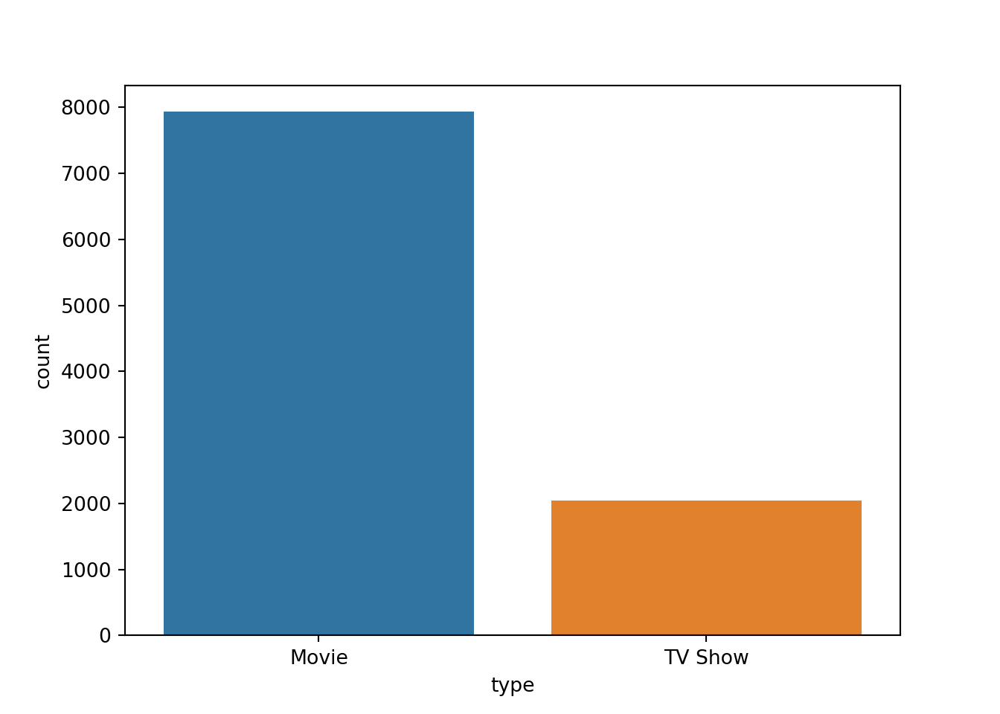
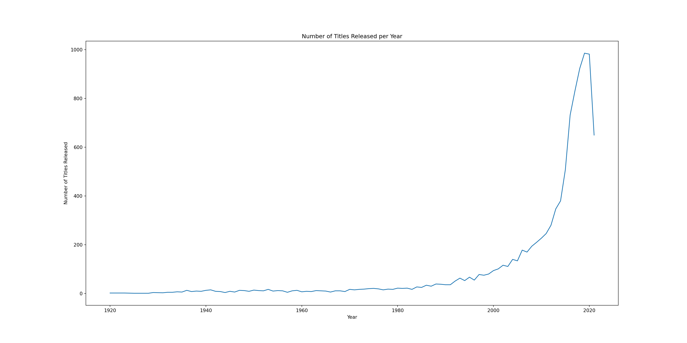
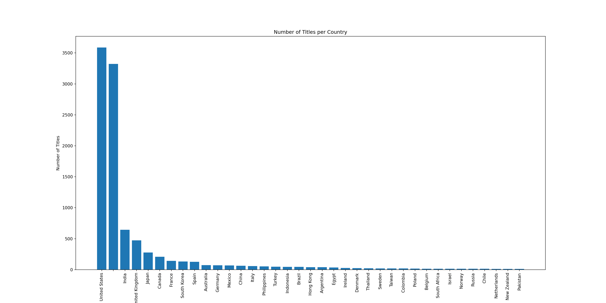
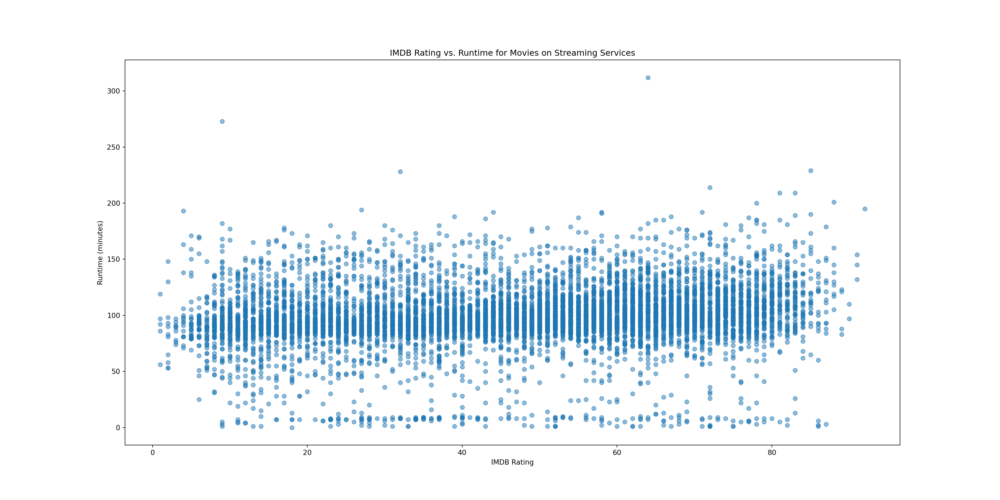
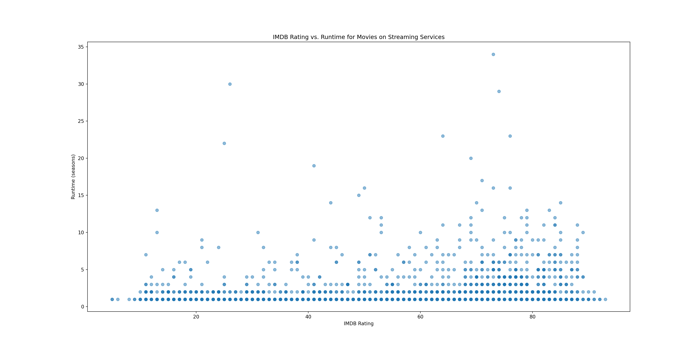
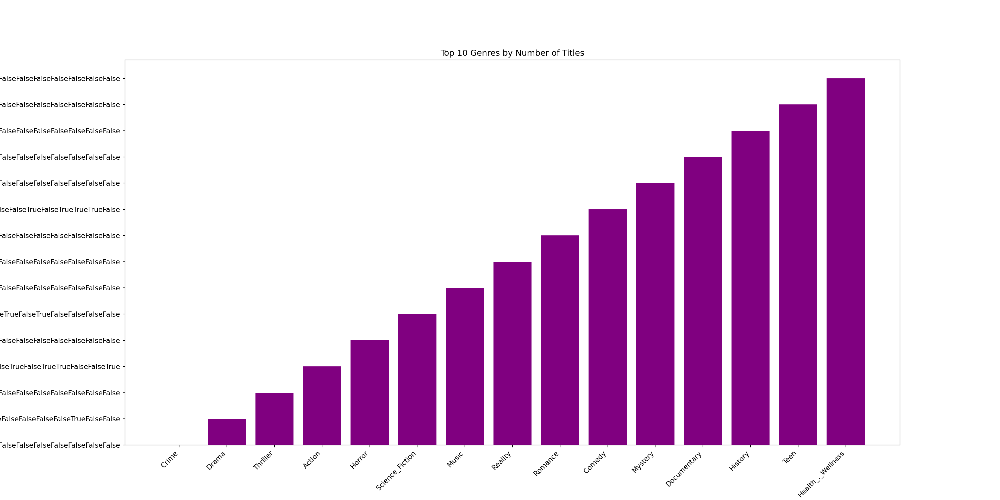

Code
data <- read.csv("/Users/roshanmehta/Documents/GitHub/TV-Popularity-Project/Data/data/streaming_titles_clean.csv")website: body-header: | Abstract:
In this data science project, we will analyze a dataset containing information about streaming titles, specifically focusing on TV shows and movies from Netflix. The dataset, which can be found need links, provides valuable insights into the popularity and characteristics of different titles available on the streaming platform.
Problem Statement
The streaming services industry has seen rapid growth in recent years and has undoubtedly revolutionized the way we consume content. With numerous platforms offering a vast array of TV shows, it has become increasingly important for creators and streaming platforms to understand what makes a TV show popular. This project aims to explore the Kaggle dataset and uncover key factors that contribute to the popularity of TV shows on streaming platforms through a series of different models.
Data Collection and Description
Variable Description
The dataset contains several variables that provide valuable information for our analysis. Here is a brief description of the key variables:
type: Indicates whether the show is a TV series or a movie.title: The title of the TV show.director: The name of the director(s) of the show.cast: The names of the main cast members.country: The countries the show was released in.release_year: The year when the show was released.rating: The content rating assigned to the show (TV-14, PG-13, etc.).duration: The number of seasons (for TV series) or the duration (minutes) of the movie (for movies).listed_in: The genre(s) or category(s) the show belongs to.description: A brief summary or description of the show.score: Rating of the show or movie - scraped from IMDB.director_score: Calculated score based on the directors of the title.Together, these variables provide a set of features that allow us to analyze and understand the characteristics that determine the popularity of TV shows. By exploring these variables and their relationships, we can gain insights into the factors that contribute to a show’s popularity, like the impact of different genres or countries of origin, and begin to create better shows that more people would watch.
Snippet on how we got the data and the process that we went through when cleaning it.
In this section we will explore and visualize our dataset to gain a better understanding of what we are working with, identify any obvious patterns, correlations, or trends.
data <- read.csv("/Users/roshanmehta/Documents/GitHub/TV-Popularity-Project/Data/data/streaming_titles_clean.csv")import pandas as pd
import matplotlib.pyplot as plt
data = r.data
print("The number of rows in the data set is " + str(len(data)))The number of rows in the data set is 9971data.head() type title director ... genre.Dance genre.Medical genre.Disaster
0 Movie Silent Night ... False False False
1 Movie The Marksman ... False False False
2 Movie Gaia ... False False False
3 Movie Settlers ... False False False
4 TV Show Queens ... False False False
[5 rows x 84 columns]data.isna().sum(); print(data.shape)type 0
title 0
director 0
cast 0
country 0
..
genre.Survival 0
genre.Soap_Opera_._Melodrama 0
genre.Dance 0
genre.Medical 0
genre.Disaster 0
Length: 84, dtype: int64
(9971, 84)import seaborn as sns
sns.countplot(x=data["type"])
# 1. Line Chart of the Number of Titles Released per Year
# Group data by year and count number of titles
counts = data.groupby("release_year")["title"].count()
# Create line chart
plt.figure(figsize=(20,10))
plt.plot(counts.index, counts.values)
# Add labels and title
plt.xlabel("Year")
plt.ylabel("Number of Titles Released")
plt.title("Number of Titles Released per Year")
# Display chart
plt.show();
# 2. Histogram of the Distribution of Content Ratings
# Create histogram of content ratings
plt.figure(figsize=(20,10))
plt.hist(data["rating"].dropna(), bins=10)
# Add labels and title(array([2917., 1986., 2691., 563., 214., 938., 432., 199., 22.,
9.]), array([ 0. , 2.4, 4.8, 7.2, 9.6, 12. , 14.4, 16.8, 19.2, 21.6, 24. ]), <BarContainer object of 10 artists>)plt.xlabel("Content Rating")
plt.xticks(rotation=45)([0, 1, 2, 3, 4, 5, 6, 7, 8, 9, 10, 11, 12, 13, 14, 15, 16, 17, 18, 19, 20, 21, 22, 23, 24], [Text(0, 0, ''), Text(1, 0, 'PG-13'), Text(2, 0, 'R'), Text(3, 0, 'TV-14'), Text(4, 0, 'PG'), Text(5, 0, 'TV-PG'), Text(6, 0, 'NOT RATED'), Text(7, 0, 'TV-MA'), Text(8, 0, 'G'), Text(9, 0, 'TV-G'), Text(10, 0, 'TV-Y7'), Text(11, 0, 'TV-Y'), Text(12, 0, 'NR'), Text(13, 0, '13+'), Text(14, 0, '18+'), Text(15, 0, '16+'), Text(16, 0, 'TV-NR'), Text(17, 0, 'ALL'), Text(18, 0, '7+'), Text(19, 0, 'NC-17'), Text(20, 0, 'UNRATED'), Text(21, 0, 'AGES_16_'), Text(22, 0, 'NOT_RATE'), Text(23, 0, 'TV-Y7-FV'), Text(24, 0, 'UR')])plt.ylabel("Frequency")
plt.title("Distribution of Content Ratings")
# Display chart
plt.show();
# 3. Bar Chart of the Number of Titles per Country (count > 10)
# Extract first country from country column
chart = data.copy()
chart["country"] = chart["country"].str.split(", ").str[0]
# Group data by country and count number of titles
counts = chart.groupby("country")["title"].count()
counts = counts[counts > 10].sort_values(ascending=False)
# Create bar chart
plt.figure(figsize=(20,10))
plt.bar(counts.index, counts.values)
# Add labels and title<BarContainer object of 37 artists>plt.xlabel("Country")
plt.xticks(rotation=90)([0, 1, 2, 3, 4, 5, 6, 7, 8, 9, 10, 11, 12, 13, 14, 15, 16, 17, 18, 19, 20, 21, 22, 23, 24, 25, 26, 27, 28, 29, 30, 31, 32, 33, 34, 35, 36], [Text(0, 0, 'United States'), Text(1, 0, ''), Text(2, 0, 'India'), Text(3, 0, 'United Kingdom'), Text(4, 0, 'Japan'), Text(5, 0, 'Canada'), Text(6, 0, 'France'), Text(7, 0, 'South Korea'), Text(8, 0, 'Spain'), Text(9, 0, 'Australia'), Text(10, 0, 'Germany'), Text(11, 0, 'Mexico'), Text(12, 0, 'China'), Text(13, 0, 'Italy'), Text(14, 0, 'Philippines'), Text(15, 0, 'Turkey'), Text(16, 0, 'Indonesia'), Text(17, 0, 'Brazil'), Text(18, 0, 'Hong Kong'), Text(19, 0, 'Argentina'), Text(20, 0, 'Egypt'), Text(21, 0, 'Ireland'), Text(22, 0, 'Denmark'), Text(23, 0, 'Thailand'), Text(24, 0, 'Sweden'), Text(25, 0, 'Taiwan'), Text(26, 0, 'Colombia'), Text(27, 0, 'Poland'), Text(28, 0, 'Belgium'), Text(29, 0, 'South Africa'), Text(30, 0, 'Israel'), Text(31, 0, 'Norway'), Text(32, 0, 'Russia'), Text(33, 0, 'Chile'), Text(34, 0, 'Netherlands'), Text(35, 0, 'New Zealand'), Text(36, 0, 'Pakistan')])plt.ylabel("Number of Titles")
plt.title("Number of Titles per Country")
# Display chart
plt.show()
# 4. Movie and Rating Scatter Plot
# Filter out TV shows and missing ratings
movies = data[(data["type"] == "Movie") & (data["score"].notnull())]
# Create scatter plot of IMDB rating vs. runtime
plt.figure(figsize=(20,10))
plt.scatter(movies["score"], movies["duration"], alpha=0.5)
# Add labels and title
plt.xlabel("IMDB Rating")
plt.ylabel("Runtime (minutes)")
plt.title("IMDB Rating vs. Runtime for Movies on Streaming Services")
# Display chart
plt.show()
# 5. TV Show and Rating Scatter Plot
# Filter out Movies and missing ratings
tv = data[(data["type"] == "TV Show") & (data["score"].notnull())]
# Create scatter plot of IMDB rating vs. runtime
plt.figure(figsize=(20,10))
plt.scatter(tv["score"], tv["duration"], alpha=0.5)
# Add labels and title
plt.xlabel("IMDB Rating")
plt.ylabel("Runtime (seasons)")
plt.title("IMDB Rating vs. Runtime for Movies on Streaming Services")
# Display chart
plt.show()
# 6. Top 15 Genres By Number of Titles
# Get list of genre columns
genre_cols = [col for col in data.columns if col.startswith("genre")]
# Sum the number of true values in each genre column to get the total number of titles for each genre
genre_counts = data[genre_cols].sum()#.sort_values(ascending=False)
# Get the top 10 genres by number of titles
top_genres = genre_counts[:15]
# Remove "genre." from the genre names in the x-axis labels
labels = [col.replace("genre.", "") for col in top_genres.index]
# Create bar chart
plt.figure(figsize=(20, 10))
plt.bar(labels, top_genres.values, color='purple')
# Add labels and title<BarContainer object of 15 artists>plt.xlabel("Genre")
plt.xticks(rotation=45, ha='right')([0, 1, 2, 3, 4, 5, 6, 7, 8, 9, 10, 11, 12, 13, 14], [Text(0, 0, 'Crime'), Text(1, 0, 'Drama'), Text(2, 0, 'Thriller'), Text(3, 0, 'Action'), Text(4, 0, 'Horror'), Text(5, 0, 'Science_Fiction'), Text(6, 0, 'Music'), Text(7, 0, 'Reality'), Text(8, 0, 'Romance'), Text(9, 0, 'Comedy'), Text(10, 0, 'Mystery'), Text(11, 0, 'Documentary'), Text(12, 0, 'History'), Text(13, 0, 'Teen'), Text(14, 0, 'Health_._Wellness')])plt.ylabel("Number of Titles")
plt.title("Top 10 Genres by Number of Titles")
# Display chart
plt.show()
Need to go back and fix this last one, does not look the same as it is in the data_visualization.ipynb for some reason.
Also need to go back and figure out how to show only the charts and hide the other unnecessary output.
App page (need to embed app here for use)
Methods Page
Results Page
Discussion and Interpretation Page